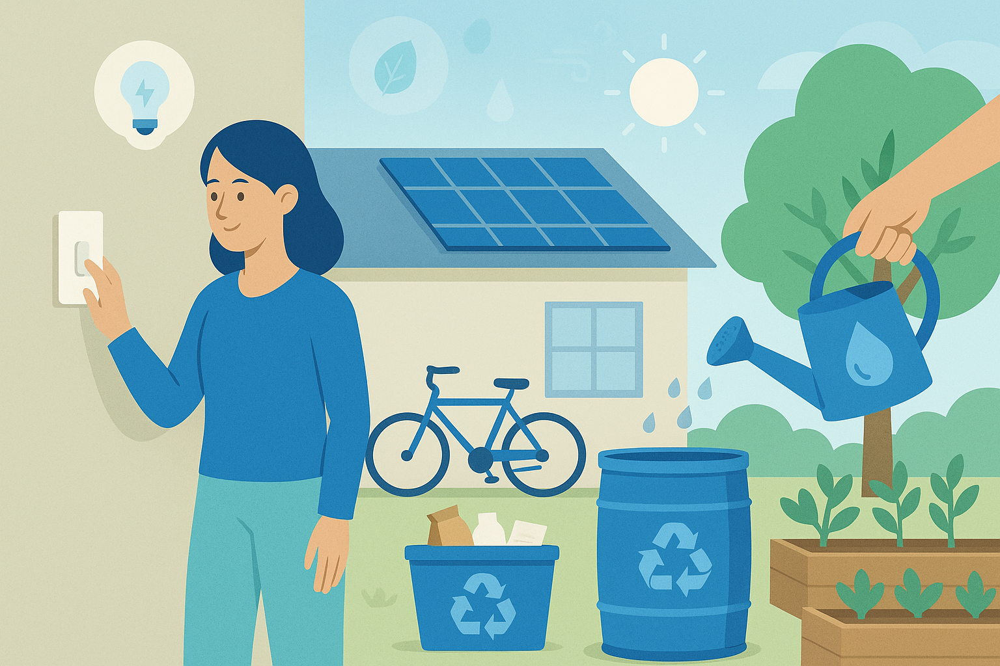

Nachhaltigkeit ist mehr als nur ein Modewort – es ist eine Notwendigkeit für die Zukunft unseres Planeten. Viele Menschen möchten nachhaltiger leben, wissen aber nicht genau, wo sie anfangen sollen. Die gute Nachricht ist: Schon kleine Veränderungen im Alltag können eine große Wirkung haben.
Energie sparen
Reduzieren Sie Ihren Energieverbrauch, indem Sie energieeffiziente Geräte verwenden, das Licht ausschalten, wenn Sie einen Raum verlassen, und die Heizung bewusst einstellen. Auch der Wechsel zu einem Ökostromanbieter kann einen Unterschied machen.
Wasserverbrauch reduzieren
Achten Sie auf Ihren Wasserverbrauch beim Duschen, Zähneputzen und Geschirrspülen. Reparieren Sie tropfende Wasserhähne und sammeln Sie Regenwasser für den Garten.
Müll vermeiden und richtig trennen
Vermeiden Sie Einwegprodukte und setzen Sie auf wiederverwendbare Alternativen. Kaufen Sie unverpackte Lebensmittel, nutzen Sie Stofftaschen und trennen Sie Ihren Müll sorgfältig, um das Recycling zu erleichtern.
Bewusster Konsum
- Kaufen Sie regional und saisonal ein, um lange Transportwege zu vermeiden.
- Bevorzugen Sie Produkte aus fairem Handel und biologischem Anbau.
- Überlegen Sie vor jedem Kauf, ob Sie das Produkt wirklich benötigen. Reparieren statt wegwerfen ist oft eine gute Alternative.
Nachhaltige Mobilität
Nutzen Sie öfter das Fahrrad, öffentliche Verkehrsmittel oder bilden Sie Fahrgemeinschaften. Für längere Strecken kann die Bahn eine umweltfreundlichere Alternative zum Flugzeug sein.
Jeder Schritt zählt. Indem wir bewusste Entscheidungen treffen und nachhaltige Gewohnheiten in unseren Alltag integrieren, können wir gemeinsam einen positiven Beitrag für unsere Umwelt und zukünftige Generationen leisten.